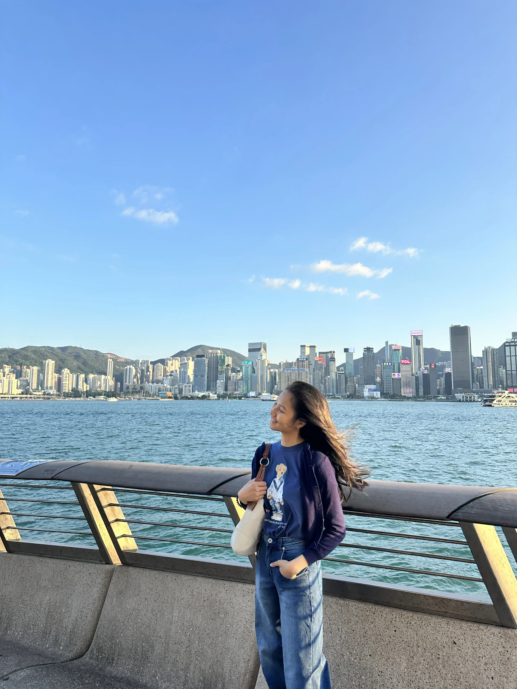
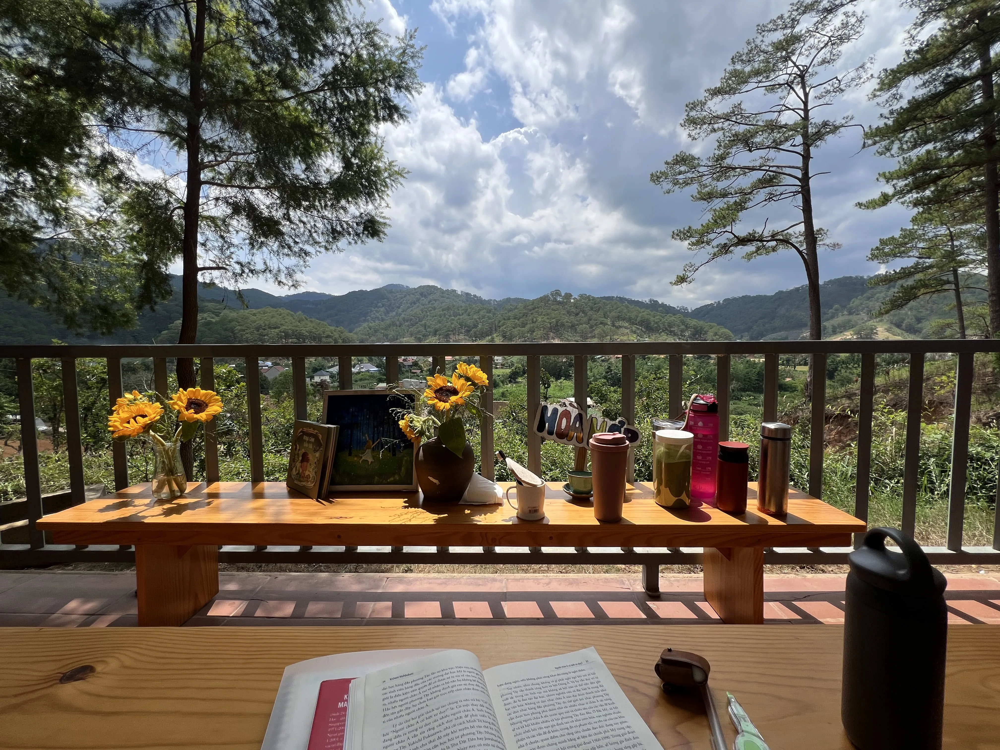
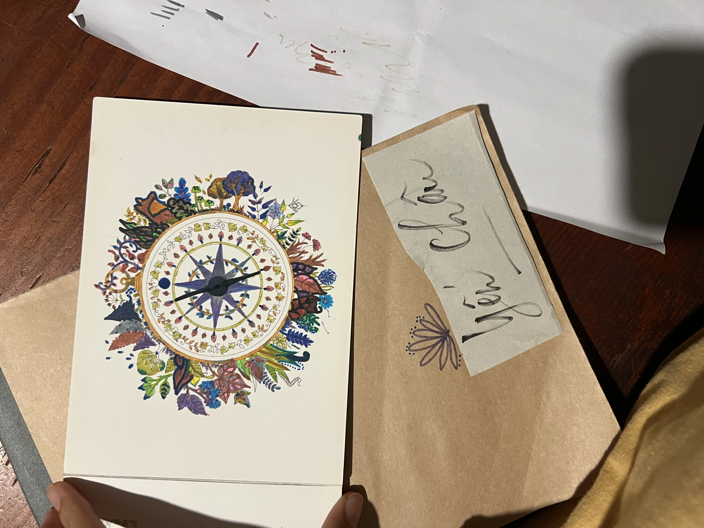
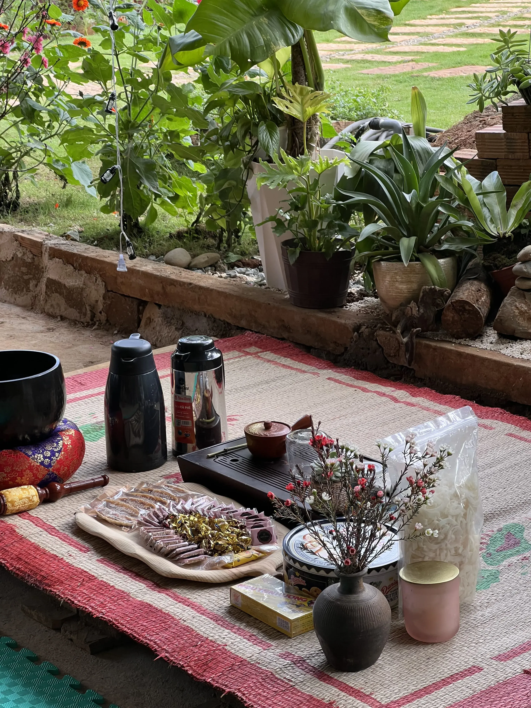
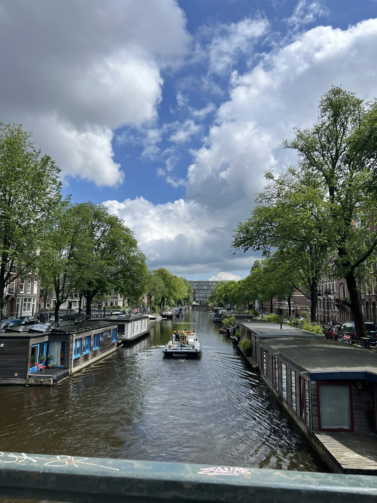
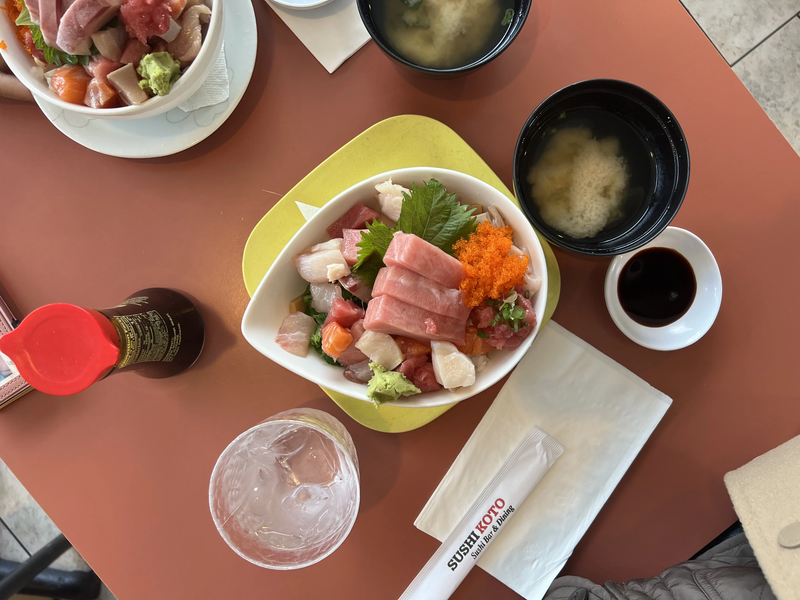

Interaction Designer
who loves to make uncertainty feel adventurous — and growth feel possible.
A Human Being
Scroll

Gabriella Hoang · Sydney
From Saigon to Sydney
I am an interaction design student at USYD, working
across behavioural systems, service
design, and speculative futures.
Grounded in human insight, I design strategic experiences to enable meaningful behaviour,
connection, and
long-term decision-making.
My work explores how designs can help people navigate
moments of
of emotional complexity and uncertainty through a process of
research, systems thinking, prototyping, and reflection.
I am drawn to
interdisciplinary projects where I can learn from others and co-create more joyful,
supportive, and
connected ways of living.
My design is grounded in
Tools & craft
Design
Code
Human
Selected Projects · 2021–2026
We are expected to work, to study, and to plan for the future every day.
But what about living?
I design for people to live —
to really feel their lives.
Sometimes, we need to pause
and allow ourselves to enjoy what we have achieved so far.
Every moment I live, I am designing my life

NatureI love the feeling of being alive and just enjoy whatever I see, hear or touch.

InspirationColours, shapes, and behaviours make me curious about the stories hidden in the world. They help me understand, grow, and keep my love for exploration alive.

RitualI love activities that bring people together through genuine connection. Whether it is tea, nature, stories, or small rituals, I am drawn to moments where people can slow down, feel present, and connect with each other.

TravelEither being alone or with people, my mood can easily get hyped at new places

FoodSushi is my favourite food. Fruit is the second. Just juicy, fresh and umami